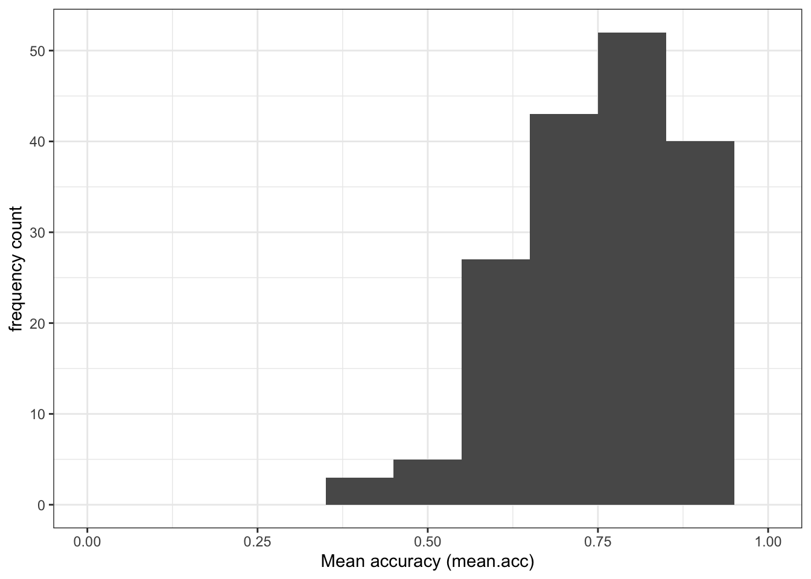
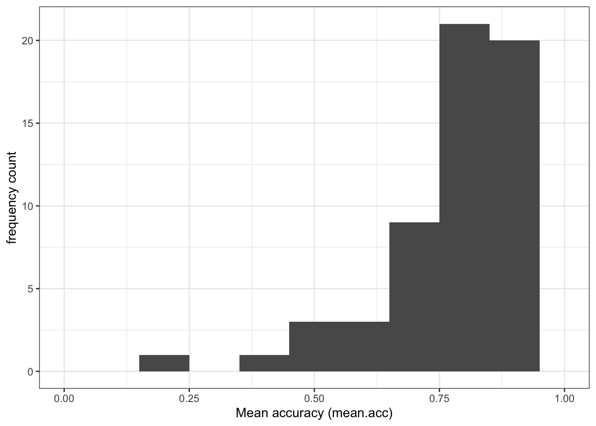
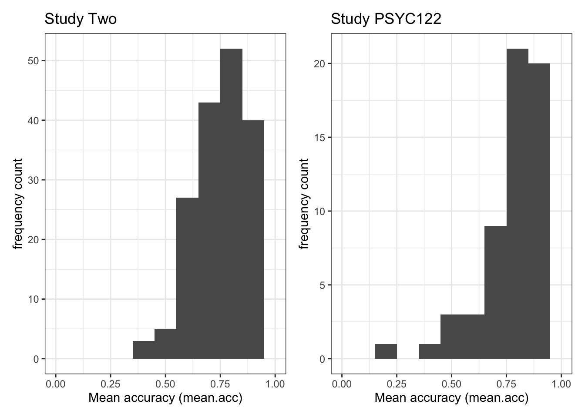
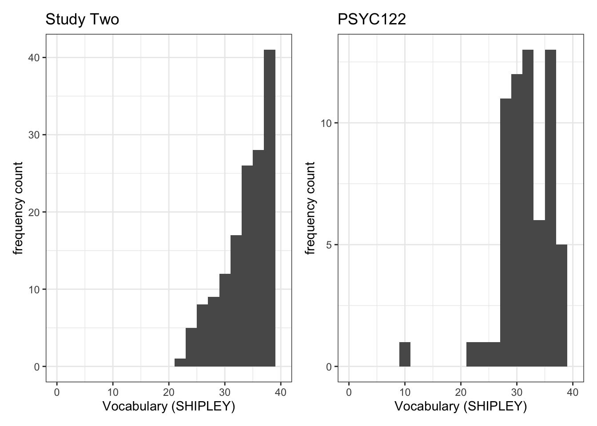
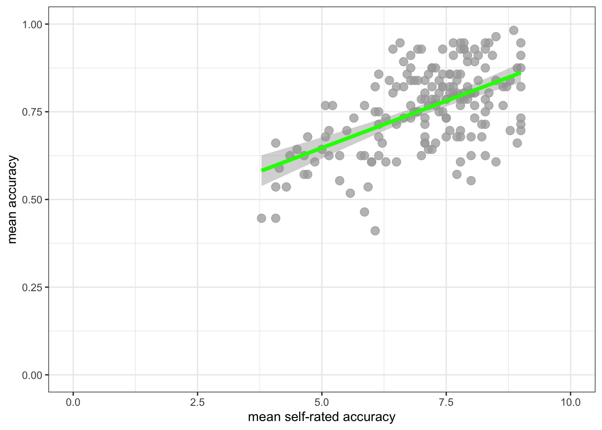
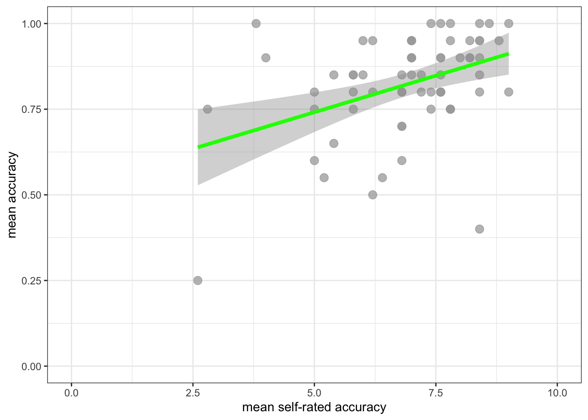
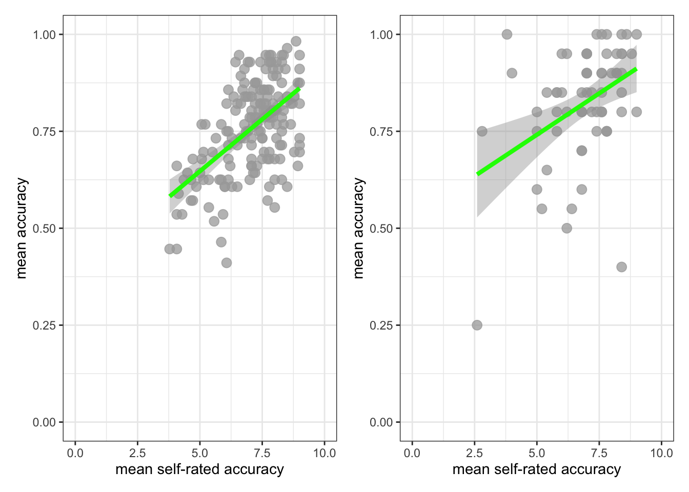
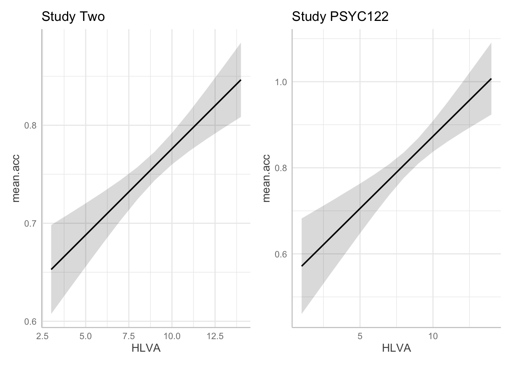
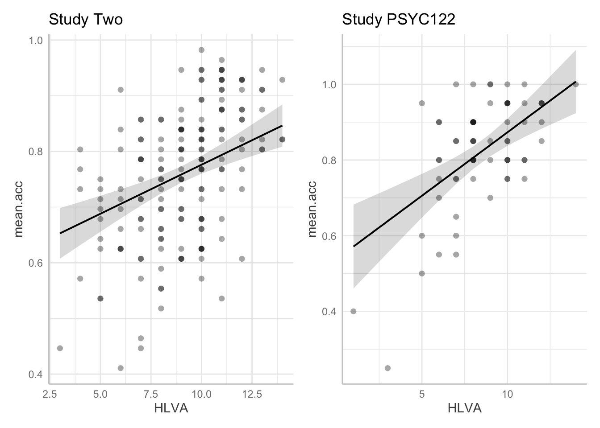

rm(list=ls()) 2023-24-PSYC122-w19-workbook-answers
Introduction
In Week 19, we aim to further develop skills in working with the linear model.
We do this to learn how to answer research questions like:
- What person attributes predict success in understanding?
- Can people accurately evaluate whether they correctly understand written health information?
In Week 19, we use data contributed by PSYC122 students to figure out our answers to these questions.
We compare PSYC122 results to the results from a previous study so that we can assess the robustness of our findings.
In this class, what is new is our focus on critically evaluating – comparing, reflecting on – the evidence from more than one relevant study.
- This work simulates the kind of critical evaluation of evidence that psychologists must do in professional research.
Naming things
I will format dataset names like this:
study-two-general-participants.csv
I will also format variable (data column) names like this: variable
I will also format value or other data object (e.g. cell value) names like this: studyone
I will format functions and library names like this: e.g. function ggplot() or e.g. library {tidyverse}.
The data we will be using
- Data from a study we conducted on the response of adults from a UK national participant sample:
study-two-general-participants.csv
- Data comprising the responses of PSYC122 students:
2023-24_PSYC122-participants.csv
Notice that study-two participants and the PSYC122 participants were given similar tests but different health information texts to read and respond to.
Answers
Step 1: Set-up
To begin, we set up our environment in R.
Task 1 – Run code to empty the R environment
Task 2 – Run code to load relevant libraries
library("ggeffects")Warning: package 'ggeffects' was built under R version 4.2.3library("patchwork")
library("tidyverse")── Attaching packages ─────────────────────────────────────── tidyverse 1.3.2 ──
✔ ggplot2 3.5.1 ✔ purrr 1.0.2
✔ tibble 3.2.1 ✔ dplyr 1.1.2
✔ tidyr 1.3.0 ✔ stringr 1.5.0
✔ readr 2.1.3 ✔ forcats 0.5.2Warning: package 'ggplot2' was built under R version 4.2.3── Conflicts ────────────────────────────────────────── tidyverse_conflicts() ──
✖ dplyr::filter() masks stats::filter()
✖ dplyr::lag() masks stats::lag()Step 2: Load the data
Task 3 – Read in the data files we will be using
The data files are called:
study-two-general-participants.csv2023-24_PSYC122-participants.csv
Use the read_csv() function to read the data files into R:
study.two.gen <- read_csv("study-two-general-participants.csv") Rows: 172 Columns: 12
── Column specification ────────────────────────────────────────────────────────
Delimiter: ","
chr (5): participant_ID, study, GENDER, EDUCATION, ETHNICITY
dbl (7): mean.acc, mean.self, AGE, SHIPLEY, HLVA, FACTOR3, QRITOTAL
ℹ Use `spec()` to retrieve the full column specification for this data.
ℹ Specify the column types or set `show_col_types = FALSE` to quiet this message.study.122 <- read_csv("2023-24_PSYC122-participants.csv") Rows: 65 Columns: 15
── Column specification ────────────────────────────────────────────────────────
Delimiter: ","
chr (7): ResponseId, GENDER, EDUCATION, ETHNICITY, NATIVE.LANGUAGE, OTHER.LA...
dbl (8): AGE, EDUCATION.rating_1, ENGLISH.PROFICIENCY, SHIPLEY, HLVA, FACTOR...
ℹ Use `spec()` to retrieve the full column specification for this data.
ℹ Specify the column types or set `show_col_types = FALSE` to quiet this message.When you read the data files in, give the data objects you create distinct name e.g. study.two.gen versus study.122.
Task 4 – Inspect the data file
Use the summary() or head() functions to take a look at both datasets.
summary(study.two.gen) participant_ID mean.acc mean.self study
Length:172 Min. :0.4107 Min. :3.786 Length:172
Class :character 1st Qu.:0.6786 1st Qu.:6.411 Class :character
Mode :character Median :0.7679 Median :7.321 Mode :character
Mean :0.7596 Mean :7.101
3rd Qu.:0.8393 3rd Qu.:7.946
Max. :0.9821 Max. :9.000
AGE SHIPLEY HLVA FACTOR3
Min. :18.00 Min. :23.00 Min. : 3.000 Min. :29.00
1st Qu.:25.00 1st Qu.:32.75 1st Qu.: 7.750 1st Qu.:47.00
Median :32.50 Median :36.00 Median : 9.000 Median :51.00
Mean :35.37 Mean :35.13 Mean : 9.064 Mean :51.24
3rd Qu.:44.00 3rd Qu.:39.00 3rd Qu.:11.000 3rd Qu.:56.25
Max. :76.00 Max. :40.00 Max. :14.000 Max. :63.00
QRITOTAL GENDER EDUCATION ETHNICITY
Min. : 6.00 Length:172 Length:172 Length:172
1st Qu.:12.00 Class :character Class :character Class :character
Median :14.00 Mode :character Mode :character Mode :character
Mean :13.88
3rd Qu.:16.00
Max. :20.00 summary(study.122) ResponseId AGE GENDER EDUCATION
Length:65 Min. :18.00 Length:65 Length:65
Class :character 1st Qu.:18.00 Class :character Class :character
Mode :character Median :19.00 Mode :character Mode :character
Mean :19.42
3rd Qu.:19.00
Max. :56.00
EDUCATION.rating_1 ETHNICITY NATIVE.LANGUAGE OTHER.LANGUAGE
Min. :4.000 Length:65 Length:65 Length:65
1st Qu.:7.000 Class :character Class :character Class :character
Median :7.000 Mode :character Mode :character Mode :character
Mean :7.077
3rd Qu.:8.000
Max. :9.000
ENGLISH.PROFICIENCY OCCUPATION SHIPLEY HLVA
Min. :1.000 Length:65 Min. :10.00 Min. : 1.000
1st Qu.:2.500 Class :character 1st Qu.:30.00 1st Qu.: 7.000
Median :3.000 Mode :character Median :32.00 Median : 8.000
Mean :2.571 Mean :32.31 Mean : 8.508
3rd Qu.:3.000 3rd Qu.:36.00 3rd Qu.:10.000
Max. :3.000 Max. :40.00 Max. :14.000
NA's :58
FACTOR3 mean.acc mean.self
Min. :28.00 Min. :0.2500 Min. :2.60
1st Qu.:43.00 1st Qu.:0.7500 1st Qu.:6.20
Median :46.00 Median :0.8500 Median :7.00
Mean :46.91 Mean :0.8231 Mean :6.92
3rd Qu.:52.00 3rd Qu.:0.9500 3rd Qu.:7.80
Max. :61.00 Max. :1.0000 Max. :9.00
Step 3: Compare the data from the different studies
Revise: practice to strengthen skills
Task 5 – Compare the data distributions from the two studies
Q.1. What is the mean of the
mean.accandSHIPLEYvariables in the two studies?A.1. The means are:
study two –
mean.acc: mean = 0.7596study two –
SHIPLEY: mean = 35.13study PSYC122 –
mean.acc: mean = 0.8231study PSYC122 –
SHIPLEY: mean = 32.31Q.2. Draw histograms of both mean.acc and mean.self for both studies.
A.2. You can write the code as you have been shown to do e.g. in
2023-24-PSYC122-w19-how-to.Rmd:
ggplot(data = study.two.gen, aes(x = mean.acc)) +
geom_histogram(binwidth = .1) +
theme_bw() +
labs(x = "Mean accuracy (mean.acc)", y = "frequency count") +
xlim(0, 1)Warning: Removed 2 rows containing missing values or values outside the scale range
(`geom_bar()`).
ggplot(data = study.two.gen, aes(x = SHIPLEY)) +
geom_histogram(binwidth = 2) +
theme_bw() +
labs(x = "Vocabulary (SHIPLEY)", y = "frequency count") +
xlim(0, 40)Warning: Removed 2 rows containing missing values or values outside the scale range
(`geom_bar()`).
ggplot(data = study.122, aes(x = mean.acc)) +
geom_histogram(binwidth = .1) +
theme_bw() +
labs(x = "Mean accuracy (mean.acc)", y = "frequency count") +
xlim(0, 1)Warning: Removed 2 rows containing missing values or values outside the scale range
(`geom_bar()`).
ggplot(data = study.122, aes(x = SHIPLEY)) +
geom_histogram(binwidth = 2) +
theme_bw() +
labs(x = "Vocabulary (SHIPLEY)", y = "frequency count") +
xlim(0, 40)Warning: Removed 2 rows containing missing values or values outside the scale range
(`geom_bar()`).
Introduce: make some new moves
Task 6 – Create grids of plots to make the comparison easier to do
hint: Task 6 – What we are going to do is to create two histograms and then present them side by side to allow easy comparison of variable distributions
We need to make two changes to the coding approach you have been using until now.
Before we explain anything, let’s look at an example: run these line of code and check the result.
- Make sure you identify what is different about the plotting code, shown following, compared to what you have done before: there is a surprise in what is going to happen.
First, create plot objects, give them names, but do not show them:
plot.two <- ggplot(data = study.two.gen, aes(x = mean.acc)) +
geom_histogram(binwidth = .1) +
theme_bw() +
labs(x = "Mean accuracy (mean.acc)", y = "frequency count", title = "Study Two") +
xlim(0, 1)
plot.122 <- ggplot(data = study.122, aes(x = mean.acc)) +
geom_histogram(binwidth = .1) +
theme_bw() +
labs(x = "Mean accuracy (mean.acc)", y = "frequency count", title = "Study PSYC122") +
xlim(0, 1)Second, show the plots, side-by-side:
plot.two + plot.122Warning: Removed 2 rows containing missing values or values outside the scale range
(`geom_bar()`).
Removed 2 rows containing missing values or values outside the scale range
(`geom_bar()`).
This is what you are doing: check out the process, step-by-step. (And notice that you repeat the process for each of two (or more) plots.)
ggplot(...)tell R you want to make a plot using theggplot()function;plot.one <-tell R you want to give the plot a name; the name appears in the environment;ggplot(data = study.two.gen ...)tell R you want to make a plot with thestudy.twodata;ggplot(..., aes(x = mean.acc))tell R that you want to make a plot with the variablemean.acc;
- here, specify the aesthetic mapping,
x = mean.acc
geom_histogram()tell R you want to plot values ofmean.accas a histogram;binwidth = .1adjust the binwidth to show enough detail but not too much in the distribution;theme_bw()tell R what theme you want, adjusting the plot appearance;labs(x = "Mean accuracy (mean.acc)", y = "frequency count", title = "Study Two")fix the x-axis and y-axis labels;
- here, add a title for the plot, so you can tell the two plots apart;
xlim(0, 1)adjust the x-axis limits to show the full range of possible score values on this variable.
Do this process twice, once for each dataset, creating two plots so that you can compare the distribution of mean.acc scores between the studies.
Finally, having created the two plots, produce them for viewing:
plot.two + plot.122having constructed – and named – both plots, you enter their names, separated by a +, to show them in a grid of two plots.
Notice: until you get to step 10, nothing will appear. This will be surprising but it is perfectly normal when we increase the level of complexity of the plots we build.
- You first build the plots.
- You are creating plot objects and you give these objects names.
- The objects will appear in the
Environmentwith the names you give them. - You then produce the plots for viewing, by using their names.
Until you complete the last step, you will not see any changes until you use the object names to produce them for viewing.
This is how you construct complex arrays of plots.
Task 7 – Try this out for yourself, focusing now on the distribution of SHIPLEY scores in the two studies
First, create plot objects but do not show them.
- Give each plot a name. You will use the names next.
plot.two <- ggplot(data = study.two.gen, aes(x = SHIPLEY)) +
geom_histogram(binwidth = 2) +
theme_bw() +
labs(x = "Vocabulary (SHIPLEY)", y = "frequency count", title = "Study Two") +
xlim(0, 40)
plot.122 <- ggplot(data = study.122, aes(x = SHIPLEY)) +
geom_histogram(binwidth = 2) +
theme_bw() +
labs(x = "Vocabulary (SHIPLEY)", y = "frequency count", title = "PSYC122") +
xlim(0, 40)Second produce the plots for viewing, side-by-side, by naming them.
plot.two + plot.122Warning: Removed 2 rows containing missing values or values outside the scale range
(`geom_bar()`).
Removed 2 rows containing missing values or values outside the scale range
(`geom_bar()`).
- Q.3. Now use the plots to do some data analysis work: how do the
SHIPLEYdistributions compare, when you compare theSHIPLEYofstudy.two.genversusSHIPLEYofstudy.122? - A.3. When you compare the plots side-by-side you can see that the
SHIPLEYdistributions are mostly similar: most people have highSHIPLEYscores.
But you can also see striking differences:
The peak of the distribution – where the tallest bar is – is at a higher
SHIPLEYscore instudy.two.gen(aroundSHIPLEY= 37-38) than instudy.122(where is it aroundSHIPLEY= 30).There appear to be fewer participants with lower
SHIPLEYscores instudy.122than instudy.two.Q.4. Is the visual impression you get from comparing the distributions consistent with the statistics you see in the summary?
A.4. Yes: If you go back to the summary of
SHIPLEY, comparing the two studies datasets, then you can see that the median and mean are higher instudy.122than instudy.two.gen.
Step 4: Now use scatterplots and correlation to examine associations between variables
Revise: practice to strengthen skills
Task 8 – Draw scatterplots to compare the potential association between mean.acc and mean.self in both study.two.gen and study.122 datasets
hint: Task 8 – The plotting steps are explained in some detail in 2023-24-PSYC122-w17-how-to.Rmd and you can see example code in 2023-24-PSYC122-w19-how-to.Rmd
ggplot(data = study.two.gen, aes(x = mean.self, y = mean.acc)) +
geom_point(alpha = 0.75, size = 3, colour = "darkgrey") +
geom_smooth(method = "lm", size = 1.5, colour = "green") +
theme_bw() +
labs(x = "mean self-rated accuracy", y = "mean accuracy") +
xlim(0, 10) + ylim(0, 1)Warning: Using `size` aesthetic for lines was deprecated in ggplot2 3.4.0.
ℹ Please use `linewidth` instead.`geom_smooth()` using formula = 'y ~ x'
ggplot(data = study.122, aes(x = mean.self, y = mean.acc)) +
geom_point(alpha = 0.75, size = 3, colour = "darkgrey") +
geom_smooth(method = "lm", size = 1.5, colour = "green") +
theme_bw() +
labs(x = "mean self-rated accuracy", y = "mean accuracy") +
xlim(0, 10) + ylim(0, 1)`geom_smooth()` using formula = 'y ~ x'
Task 9 – Create a grid of plots to make the comparison easier to do
hint: Task 9 – We follow the same steps as we used in tasks 6 and 7 to create the plots
We again:
- First construct the plot objects and give them names;
- create and show a grid of named plots.
Though this time we are producing a grid of scatterplots.
First, create plot objects, give them names, but do not show them:
plot.two <- ggplot(data = study.two.gen, aes(x = mean.self, y = mean.acc)) +
geom_point(alpha = 0.75, size = 3, colour = "darkgrey") +
geom_smooth(method = "lm", size = 1.5, colour = "green") +
theme_bw() +
labs(x = "mean self-rated accuracy", y = "mean accuracy") +
xlim(0, 10) + ylim(0, 1)
plot.122 <- ggplot(data = study.122, aes(x = mean.self, y = mean.acc)) +
geom_point(alpha = 0.75, size = 3, colour = "darkgrey") +
geom_smooth(method = "lm", size = 1.5, colour = "green") +
theme_bw() +
labs(x = "mean self-rated accuracy", y = "mean accuracy") +
xlim(0, 10) + ylim(0, 1)Second name the plots, to show them side-by-side in the plot window:
plot.two + plot.122`geom_smooth()` using formula = 'y ~ x'
`geom_smooth()` using formula = 'y ~ x'
Now use the plots to make comparison judgments.
- Q.5. How does the association, shown in the plots, between
mean.selfandmean.acccompare when you look at thestudy.two.genversus thestudy.122plot? - hint: Q.5. When comparing evidence about associations in different studies, we are mostly going to focus on the slope – the angle – of the prediction lines, and the ways in which points do or do not cluster about the prediction lines.
- A.5. If you examine the
study.two.genversus thestudy.122plots then you can see that in both plots highermean.selfscores appear to be associated with highermean.accscores. But the trend maybe is a bit stronger – the line is steeper – instudy.two.gen.
We are now in a position to answer one of our research questions:
- Can people accurately evaluate whether they correctly understand written health information?
If people can accurately evaluate whether they correctly understand written health information then mean.self (a score representing their evaluation) should be associated with mean.acc (a score representing their accuracy of understanding) for each person.
Revise: practice to strengthen skills
Task 10 – Can you estimate the association between mean.acc and mean.self in both datasets?
hint: Task 10 – We use cor.test() as you have been shown how to do e.g. in 2023-24-PSYC122-w16-how-to.Rmd
Do the correlation for both datasets.
First, look at the correlation between mean.acc and mean.self in study.two:
cor.test(study.two.gen$mean.acc, study.two.gen$mean.self, method = "pearson", alternative = "two.sided")
Pearson's product-moment correlation
data: study.two.gen$mean.acc and study.two.gen$mean.self
t = 8.4991, df = 170, p-value = 9.356e-15
alternative hypothesis: true correlation is not equal to 0
95 percent confidence interval:
0.4317217 0.6431596
sample estimates:
cor
0.5460792 Q.6. What is r, the correlation coefficient?
A.6. r = 0.5460792
Q.7. Is the correlation significant?
A.7. r is significant
Q.8. What are the values for t and p for the significance test for the correlation?
A.8. t = 8.4991, p = 9.356e-15
Second, look at the correlation between mean.acc and mean.self in study.122:
cor.test(study.122$mean.acc, study.122$mean.self, method = "pearson", alternative = "two.sided")
Pearson's product-moment correlation
data: study.122$mean.acc and study.122$mean.self
t = 3.4924, df = 63, p-value = 0.0008808
alternative hypothesis: true correlation is not equal to 0
95 percent confidence interval:
0.1761474 0.5888052
sample estimates:
cor
0.4027438 Q.9. What is r, the correlation coefficient?
A.9. r = 0.4027438
Q.10. Is the correlation significant?
A.10. r is significant
Q.11. What are the values for t and p for the significance test for the correlation?
A.11. t = 3.4924, p = 0.0008808
Now we can answer the research question:
- Can people accurately evaluate whether they correctly understand written health information?
- Q.12. What do the correlation estimates tell you is the answer to the research question?
- A.12.
The correlations are positive and significant, indicating that higher
mean.self(evaluations) are associated with highermean.acc(understanding), suggesting that people can judge their accuracy of understanding.
Q.13. Can you compare the estimates, given the two datasets, to evaluate if the result in
study.two.genis replicated instudy.122?hint: Q.13. We can judge if the result in a study is replicated in another study by examining if – here – the correlation coefficient is significant in both studies and if the coefficient has the same size and sign in both studies.
A.13. If you compare the correlation estimates from both
study.two.genandstudy.122you can see:first, the correlation is significant in both
study.two.genandstudy.122;second, the correlation is positive in both studies.
But, if you compare the correlation estimates, you can see that the coefficient estimate is smaller in study.122 (where r = .40) than in study.two.gen (where r = .55).
This may suggest that the association observed in study.two.gen is different from the association in study.122, for some reason.
Task 11 – In working with R to do data analysis, we often work with libraries of function like {tidyverse} that enable us to do things (see the week 19 lecture for discussion).
In this way, we are using the {patchwork} library so that we can create plots and then present them in a grid.
Can you find the online information about {patchwork} and use it to adjust the layout of the grids of plots you are using?
hint: Task 11 – To find out more information about a function or a library in R, do a search for the keywords
You can do a search, using any search engine (e.g., Bing, Chrome, Google), by entering:
in r …
And pasting the words you want to know about to replace the ... e.g. “in r patchwork”.
You will then see a list of results including the link to the {patchwork} information:
Step 5: Use a linear model to to answer the research questions – multiple predictors
Revise: practice to strengthen skills
Task 12 – Examine the relation between outcome mean accuracy (mean.acc) and multiple predictors
We specify linear models including as predictors the variables:
- health literacy (
HLVA); - vocabulary (
SHIPLEY); - reading strategy (
FACTOR3).
hint: Task 12 – We use lm(), as we have been doing before, see e.g. 2023-24-PSYC122-w18-how-to.R
Task 12 – Examine the predictors of mean accuracy (mean.acc), first, for the study.two.gen data
model <- lm(mean.acc ~ HLVA + SHIPLEY + FACTOR3, data = study.two.gen)
summary(model)
Call:
lm(formula = mean.acc ~ HLVA + SHIPLEY + FACTOR3, data = study.two.gen)
Residuals:
Min 1Q Median 3Q Max
-0.242746 -0.074188 0.003173 0.075361 0.211357
Coefficients:
Estimate Std. Error t value Pr(>|t|)
(Intercept) 0.146896 0.076325 1.925 0.05597 .
HLVA 0.017598 0.003589 4.904 2.2e-06 ***
SHIPLEY 0.008397 0.001853 4.533 1.1e-05 ***
FACTOR3 0.003087 0.001154 2.675 0.00822 **
---
Signif. codes: 0 '***' 0.001 '**' 0.01 '*' 0.05 '.' 0.1 ' ' 1
Residual standard error: 0.097 on 168 degrees of freedom
Multiple R-squared: 0.3636, Adjusted R-squared: 0.3522
F-statistic: 31.99 on 3 and 168 DF, p-value: < 2.2e-16Using the model estimates, we can answer the research question:
- What person attributes predict success in understanding?
Inspect the model summary, then answer the following questions:
Q.14. What is the estimate for the coefficient of the effect of the predictor
SHIPLEYin this model?A.14. 0.008397
Q.15. Is the effect significant?
A.15. It is significant, p < .05
Q.16. What are the values for t and p for the significance test for the coefficient?
A.16. t = 4.533, p = 1.1e-05
Q.17. Now consider the estimates for all the variables, what do you conclude is the answer to the research question – given the
study.two.gendata:
- What person attributes predict success in understanding?
hint: Q.17. Can you report the model and the model fit statistics using the language you have been shown in the week 18 lecture?
A.17.
We fitted a linear model with mean comprehension accuracy as the outcome and health literacy (
HLVA), reading strategy (FACTOR3), and vocabulary (SHIPLEY) as predictors. The model is significant overall, with F(3, 168) = 31.99, p< .001, and explains 35% of variance (adjusted R2 = 0.35). Mean accuracy was predicted to be higher given higher scores in health literacy (HLVAestimate = .018, t = 4.90, p < .001), vocabulary knowledge (SHIPLEYestimate = .008, t = 4.53, p < .001), and reading strategy (FACTOR3estimate = .003, t = 2.68, p = .008).
Task 13 – Examine the predictors of mean accuracy (mean.acc), now, for the study.122 data
model <- lm(mean.acc ~ HLVA + SHIPLEY + FACTOR3, data = study.122)
summary(model)
Call:
lm(formula = mean.acc ~ HLVA + SHIPLEY + FACTOR3, data = study.122)
Residuals:
Min 1Q Median 3Q Max
-0.37214 -0.07143 -0.01102 0.07411 0.25329
Coefficients:
Estimate Std. Error t value Pr(>|t|)
(Intercept) 0.3066150 0.1447265 2.119 0.0382 *
HLVA 0.0335342 0.0071332 4.701 1.52e-05 ***
SHIPLEY 0.0062524 0.0034741 1.800 0.0768 .
FACTOR3 0.0006217 0.0024450 0.254 0.8001
---
Signif. codes: 0 '***' 0.001 '**' 0.01 '*' 0.05 '.' 0.1 ' ' 1
Residual standard error: 0.1162 on 61 degrees of freedom
Multiple R-squared: 0.4158, Adjusted R-squared: 0.3871
F-statistic: 14.47 on 3 and 61 DF, p-value: 3.156e-07Using the model estimates, we can answer the research question:
- What person attributes predict success in understanding?
Inspect the model summary, then answer the following questions:
Q.18. What is the estimate for the coefficient of the effect of the predictor,
HLVA, in this model?A.18. 0.0335342
Q.19. Is the effect significant?
A.19. It is significant, p > .05 because p = 1.52e-05
Q.20. What are the values for t and p for the significance test for the coefficient?
A.20. t = 4.701, p < .001
Q.21. Now consider the estimates for all the variables, what do you conclude is the answer to the research question – given the
study.122data:
- What person attributes predict success in understanding?
hint: Q.21. Can you report the model and the model fit statistics using the language you have been shown in the week 18 lecture?
A.21.
We fitted a linear model with mean comprehension accuracy as the outcome and health literacy (
HLVA), reading strategy (FACTOR3), and vocabulary (SHIPLEY)as predictors. The model is significant overall, with F(3, 61) = 14.47, p < .001, and explains 39% of variance (adjusted R2 = .387). Mean accuracy was predicted to be higher given higher scores in health literacy (HLVAestimate = .034, t = 4.70, p < .001). There were non-significant effects of individual differences in vocabulary knowledge (SHIPLEYestimate = .006, t = 1.80, p = .077) and reading strategy (FACTOR3estimate = .001, t = .25, p = .800).
At this point, we can evaluate the evidence from the PSYC122 sample – based on your responses – to assess if the patterns, the estimates, we saw previously are repeated in analyses of PSYC122 responses.
Q.22. Are the findings from
study.two.genreplicated instudy.122?hint: Q.22. We can judge if the results in an earlier study are replicated in another study by examining if – here – the linear model estimates are significant in both studies and if the coefficient estimates have the same size and sign in both studies.
A.22. If you compare the linear model coefficient estimates from both the
study.two.genandstudy.122models, you can see:first, that the
HLVAeffect estimate is significant in bothstudy.two.genandstudy.122;second, that the estimates of the
HLVAeffect have the same sign – positive – in both studies while the estimated coefficient is a bit bigger in thestudy.122data (implying a stronger effect);but, third that the estimates of the effects of variation in vocabulary knowledge (
SHIPLEY) and reading strategy (FACTOR3) are significant instudy.two.genbut not instudy.122.
This suggests that the attributes – the set of abilities – that predict comprehension accuracy are similar but not the same in the study.two.gen participants compared to study.122 participants.
Q.23. How would you describe the outstanding difference between the results of the two studies?
hint: Q.23. We can look at the estimates but we can also use the model prediction plotting code you used before, see:
2022-23-PSYC122-w18-how-to.R2022-23-PSYC122-w19-how-to.Rhint: Q.23. Let’s focus on comparing the
study.two.genandstudy.122estimates for the effect ofHLVAin both models: we can plot model predictions, for comparison:
First: fit the models – using different names for the different models:
model.two <- lm(mean.acc ~ HLVA + SHIPLEY + FACTOR3, data = study.two.gen)
summary(model.two)
Call:
lm(formula = mean.acc ~ HLVA + SHIPLEY + FACTOR3, data = study.two.gen)
Residuals:
Min 1Q Median 3Q Max
-0.242746 -0.074188 0.003173 0.075361 0.211357
Coefficients:
Estimate Std. Error t value Pr(>|t|)
(Intercept) 0.146896 0.076325 1.925 0.05597 .
HLVA 0.017598 0.003589 4.904 2.2e-06 ***
SHIPLEY 0.008397 0.001853 4.533 1.1e-05 ***
FACTOR3 0.003087 0.001154 2.675 0.00822 **
---
Signif. codes: 0 '***' 0.001 '**' 0.01 '*' 0.05 '.' 0.1 ' ' 1
Residual standard error: 0.097 on 168 degrees of freedom
Multiple R-squared: 0.3636, Adjusted R-squared: 0.3522
F-statistic: 31.99 on 3 and 168 DF, p-value: < 2.2e-16model.122 <- lm(mean.acc ~ HLVA + SHIPLEY + FACTOR3, data = study.122)
summary(model.122)
Call:
lm(formula = mean.acc ~ HLVA + SHIPLEY + FACTOR3, data = study.122)
Residuals:
Min 1Q Median 3Q Max
-0.37214 -0.07143 -0.01102 0.07411 0.25329
Coefficients:
Estimate Std. Error t value Pr(>|t|)
(Intercept) 0.3066150 0.1447265 2.119 0.0382 *
HLVA 0.0335342 0.0071332 4.701 1.52e-05 ***
SHIPLEY 0.0062524 0.0034741 1.800 0.0768 .
FACTOR3 0.0006217 0.0024450 0.254 0.8001
---
Signif. codes: 0 '***' 0.001 '**' 0.01 '*' 0.05 '.' 0.1 ' ' 1
Residual standard error: 0.1162 on 61 degrees of freedom
Multiple R-squared: 0.4158, Adjusted R-squared: 0.3871
F-statistic: 14.47 on 3 and 61 DF, p-value: 3.156e-07Second, create prediction plots for the HLVA effect for each model:
dat.two <- ggpredict(model.two, "HLVA")
plot.two <- plot(dat.two) + labs(title = "Study Two")
dat.122 <- ggpredict(model.122, "HLVA")
plot.122 <- plot(dat.122) + labs(title = "Study PSYC122")Third, show the plots side-by-side:
plot.two + plot.122
- A.23. If we compare the estimates for the coefficient of the
HLVAeffect in thestudy.two.genandstudy.122models we can see that:
- The health literacy
HLVAeffect is significant in bothstudy.two.genandstudy.122. - The effect trends positive in both studies.
- The coefficient estimate is bigger in
study.122than instudy.two.gen. - The prediction plots suggest the prediction line slope is steeper in
study.122. - The grey shaded area around the trend line (indicating our uncertainty about the estimated trend) is wider for
study.two.genthan forstudy.122, suggesting we are more uncertain about the association for thestudy.two.gendata.
- The breadth of the grey shaded area around the trend line is hard to compare between the two plots. You have to look carefully at the y-axis scale information to make a judgment about the relative width of these uncertainty ellipses.
The visualizations plus the model summaries suggests that the estimates of the effect of health literacy are different in the study.122 compared to the study.two.gen data. Why is that?
- We can redraw the prediction plots to add in more information about our samples. This change, see following, will help us to interpret the results of the analyses we have done.
- And that will help you to see why data visualization and data analysis work well together.
Task 14 – In producing prediction plots, we are using functions from the {ggefects} library. Can you locate online information about working with the library functions?
Try doing a search with the key words: in r ggeffects.
If you do that, you will see links to the website:
Task 15 – In the {ggeffects} online information, you can see links to practical examples. Can you use the information under “Practical examples” to adjust the appearance of the prediction plots: to make them black and white; to add points?
First create the plots:
dat.two <- ggpredict(model.two, "HLVA")
plot.two <- plot(dat.two, colors = "bw", add.data = TRUE) + labs(title = "Study Two")Data points may overlap. Use the `jitter` argument to add some amount of
random variation to the location of data points and avoid overplotting.dat.122 <- ggpredict(model.122, "HLVA")
plot.122 <- plot(dat.122, colors = "bw", add.data = TRUE) + labs(title = "Study PSYC122")Data points may overlap. Use the `jitter` argument to add some amount of
random variation to the location of data points and avoid overplotting.Then show the plots:
plot.two + plot.122
- Q.24. Given the information in the adjusted plots, can you explain what is different about the
HLVAeffect estimate in thestudy.122data compared to the ? - A.24. Adding points allow us to see:
- There are far fewer observations in the
study.122dataset than in thestudy.two.gendata: this means that our estimate of the effect will be more uncertain because we have less information when we look at thestudy.122data. - But it is also clear that the effect of
HLVAappears to be stronger in thestudy.122data because observed scores are closer to model predictions: theHLVAeffect explains more variation in thestudy.122data than in thestudy.two.gendata.